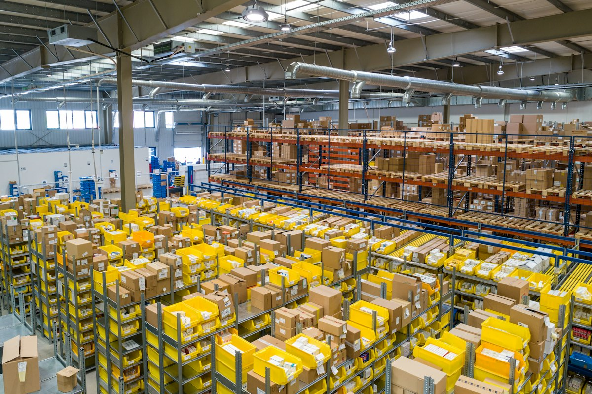

Seven questions to ask before you choose an ERP
The decisions that matter most happen long before the first demo.
Read articleCoreTech helps growing and enterprise organisations select, implement, integrate and run their ERP. One partner across finance, HR, payroll and supply chain — accountable from the first workshop to the hundredth payroll cycle.
Most partners stop at configuration. We stay for the whole lifecycle — strategy, build, data, integrations, reporting and the support that keeps it all running.
Roadmaps, business cases and vendor-neutral platform selection grounded in how your organisation actually operates.
Learn moreEnd-to-end deployment of finance, HCM and payroll — configured, tested and taken live across global teams.
Learn moreMove off legacy SAP, Oracle or on-premise systems with profiled, mapped and fully reconciled data.
Learn moreBidirectional, scheduled and audited connections between your ERP, payroll providers, CRM and in-house systems.
Learn moreBlend ERP data with every operational source and put real answers — not spreadsheet exports — in front of leadership.
Learn moreFollow-the-sun application support, release management and continuous optimisation once you're live.
Learn moreWhen finance, people and operations share one data model, numbers stop drifting apart. We design each module so it reinforces the others.
We implement and extend financials end-to-end on the same data model as your people and operations, so finance never has to reconcile against another system's version of the truth.
From core HR and recruiting to compensation, absence and performance, we configure, migrate, test and take HCM live — across countries and complex organisation structures.
Whether you run payroll natively in your ERP or keep a specialist provider for country coverage, we design, connect and parallel-test until results match to the cent.
We connect procurement, inventory and fulfilment to the ledger so spend is controlled, stock is visible and every transaction has an audit trail.
We blend ERP data with CRM, data warehouse and legacy sources under one governed permission model, then deliver dashboards in weeks — not quarters.
Five clear phases, each with an owner, an approval trail and a rollback path. Scroll to walk through a programme.
Workshops, process mapping and a current-state assessment of systems, data and people.
Weeks 1–3Future-state processes, solution blueprint, integration architecture and data strategy.
Sign-off gateIterative configuration sprints with regular playbacks so stakeholders see progress early.
Sprint demosEnd-to-end testing, parallel payroll runs and variance reconciliation against legacy.
Parallel runsCutover, hypercare and a structured hand-off to managed services and your own team.
HypercareWe pair functional experts with integration engineers and data specialists, so the people designing your processes work alongside the people building them.
Deep hands-on platform expertise, with advice that puts your requirements ahead of any vendor's agenda.
Your HR, payroll and financial data stays governed — no shadow copies, every change auditable.
Teams across time zones keep your programme moving and your support desk covered around the clock.
Years delivering ERP and HCM programmes
Payroll go-lives preceded by parallel runs
Faster time-to-insight with templated analytics
Follow-the-sun managed services coverage
A few recent programmes — from multi-country finance consolidations to payroll transformations for thousands of employees.
Four legacy finance systems consolidated into a single ERP across nine countries.
Read the story
Retail & DistributionForty sites moved to one HR and payroll platform after three clean parallel runs.
Read the storyRegional payrolls connected to the ERP, with real-time utilisation and margin dashboards.
Read the storyAnswer six quick questions about your finance close, payroll, data and reporting. Get an instant readiness score with recommendations tailored to your gaps.
Start the readiness checkRegulation, labour rules and reporting differ by industry. We bring templates and teams who already know yours.
Compliance-ready forms, credentialing and evidence capture for regulated environments.
Shift patterns, change orders, inventory and cost accounting connected end-to-end.
Controls-first design with segregation of duties and audit-ready change management.
High-volume hourly workforces, scheduling and multi-site payroll made manageable.
Project accounting, utilisation and billing aligned with people and skills data.
Grants, fund accounting and transparent reporting for accountable institutions.
A focused engagement to evaluate your current landscape and define the path forward.
A full-lifecycle programme from design through go-live and hypercare.
Managed services that keep your ERP stable, current and improving every release.
Practical guidance on ERP selection, payroll, data and analytics — written by the people who deliver it. All insights
The decisions that matter most happen long before the first demo.
Read article
The cheapest insurance policy in any HCM programme.
Read articleHow to replace the monthly spreadsheet ritual with governed dashboards.
Read articleTell us where you are — a stalled implementation, a migration on the horizon or a system that's grown hard to run. No pitch, no pressure.